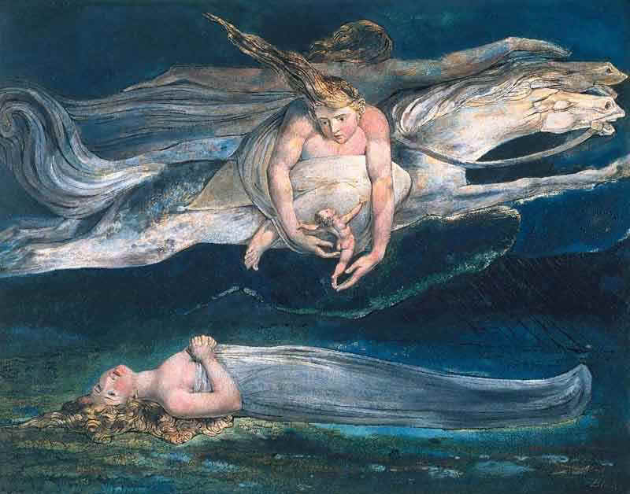
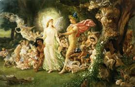

Imagination

The Spectre is the Reasoning Power in man, & when
separated
From Imagination and closing itself as in steel in a Ratio
Of the Things of Memory, It thence frames Laws & Moralities
To destroy Imagination, the Divine body, by Martyrdoms &
Wars.
William Blake, Jerusalem (as cited by Marshall McLuhan)
A Midsummer Night's Dream

Lovers and madmen have such seething brains,
Such shaping fantasies, that apprehend
More than cool reason ever comprehends.
The lunatic, the lover, and the poet
Are of imagination all compact:
One sees more devils than vast hell can hold,
That is the madman: the lover, all as frantic,
Sees Helen's beauty in a brow of Egypt:
The poet's eye, in a fine frenzy rolling,
Doth glance from heaven to earth, from earth to heaven;
And, as imagination bodies forth
The forms of things unknown, the poet's pen
Turns them to shapes, and gives to airy nothing
A local habitation and a name.
Such tricks hath strong imagination,
That if it would but apprehend some joy,
It comprehends some bringer of that joy;
Or in the night imagining some fear,
How easy is a bush supposed a bear!